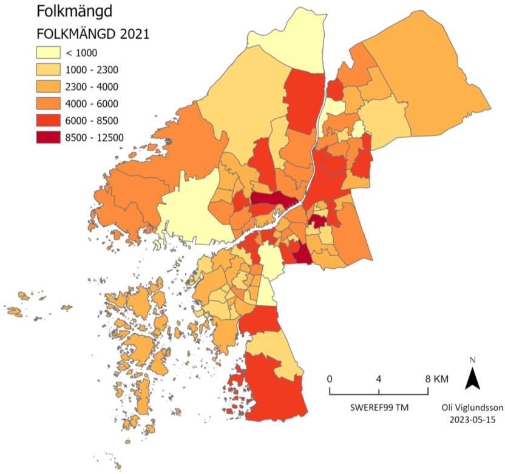
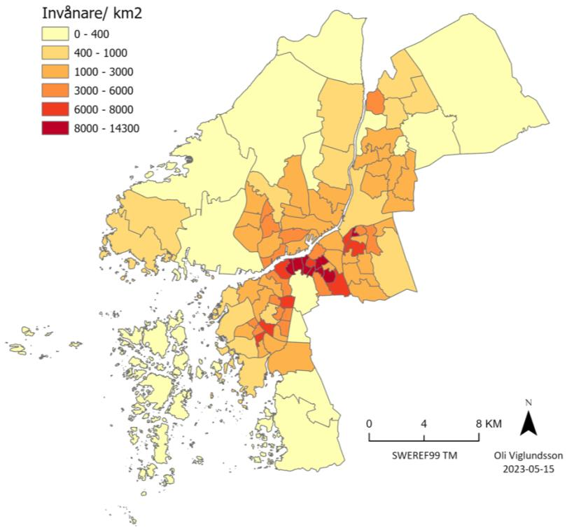
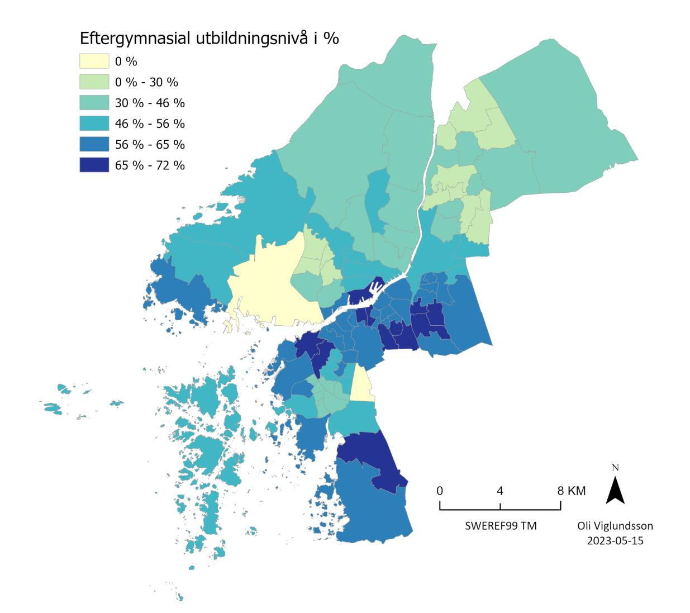
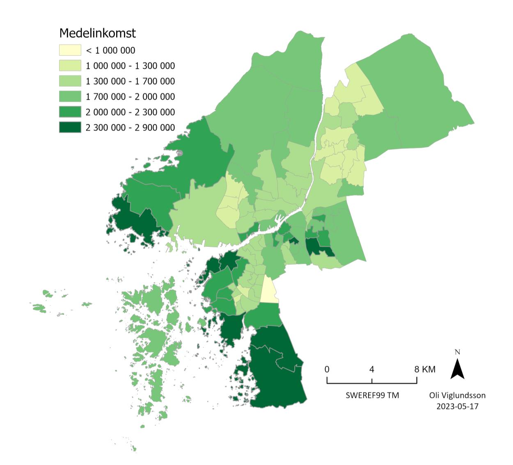
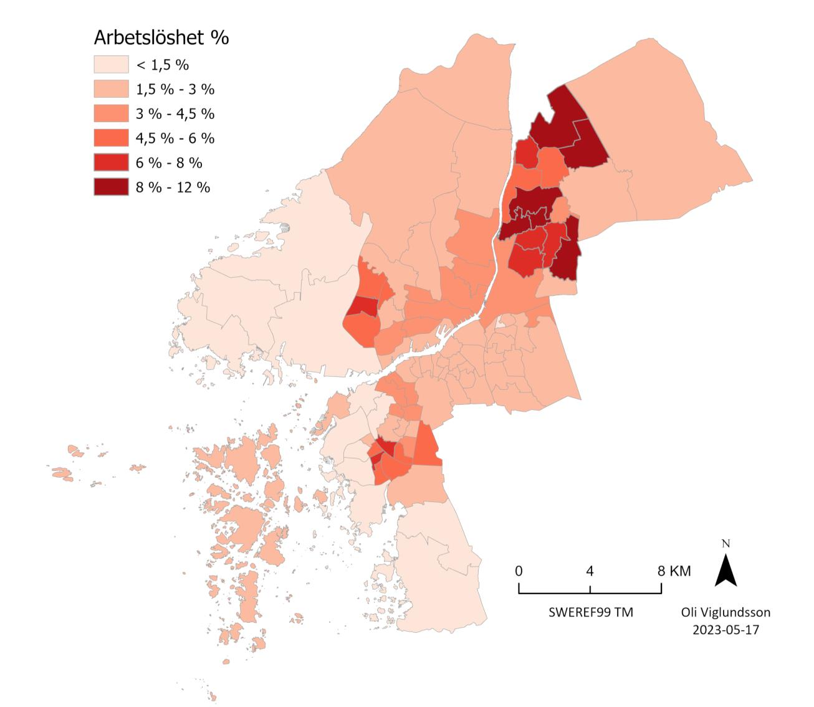
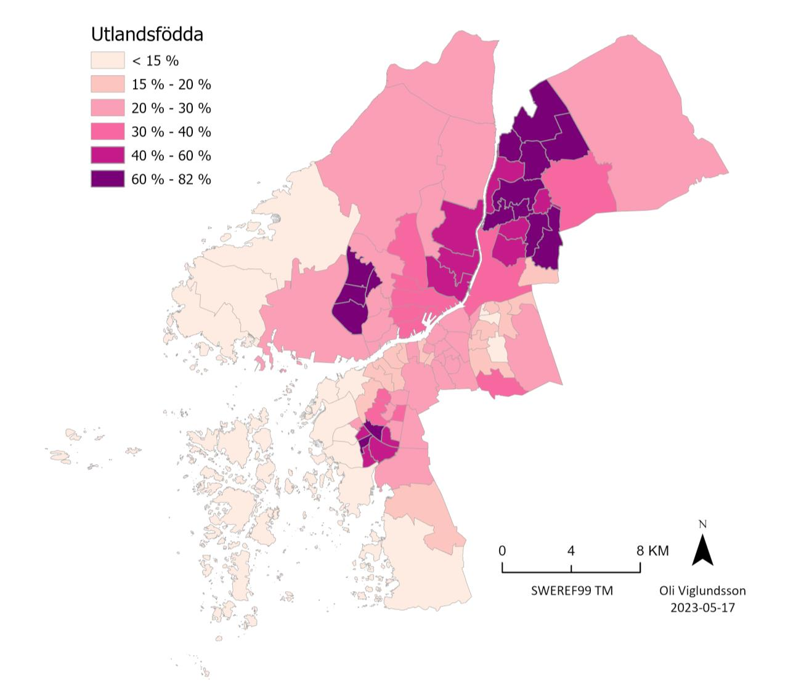
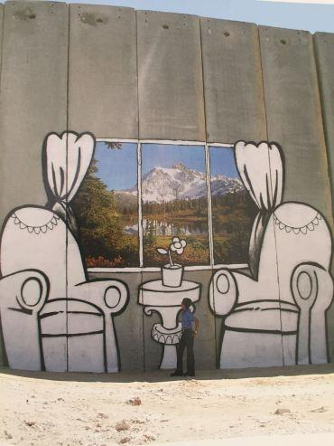

Segregerad stad ("Segregated city")
A short analysis on the segregation in Gothenburg.
Project Details / Background
Gothenburg is Sweden's second-largest city with over 600,000 residents in the urban area and just over 1 million residents in the metropolitan region. The city's favorable location along the Göta älv river and the west coast led to the early development of a strong industry and trade close to the water. Therefore, during the 20th century, the city became strongly associated with the shipbuilding industry, as well as major important companies such as Volvo and SKF. Today, the shipbuilding industry is almost entirely phased out, Volvo and SKF continue to be strong engines for the city and the country's economy, but the tourism industry and a rapidly growing medical industry have begun to take over the baton within the city's business sector.
Despite hopes for the future within the business sector with accompanying job opportunities, the city faces challenges when it comes to social sustainability. The city is segregated, and there are significant differences in income, education levels, and employment rates between different areas. There are large disparities between different parts of the city, which contributes to people's living conditions looking very different depending on where they live and grew up in the city. According to the Annual Report from Delmo (Delegation against segregation), segregation is increasing in the country, and the upbringing area can affect conditions for both academic results and employment rates in the future.
According to Gothenburg's new comprehensive plan (2022), the city is preparing for a population growth of up to 250,000 new residents. This, in turn, requires a large number of new homes and at the same time puts significant pressure on the city's efforts towards a well-functioning integration in the existing areas.
Image Gallery
Population
 It is primarily important to understand the composition of the population in the various primary areas in order to proceed and comprehend the results of the other analyses. As can be seen in the map of population, primary areas in the Center have the largest population, but areas like Billdal in the Southwest and other primary areas, which are large in area, also have a relatively high population.Population density
 However, if one looks at the map of population density, it is evident that the latter are very sparsely populated primary areas, unlike primary areas in and around the Center.Post-secondary education
 It is clear that the primary areas where the population has a high level of education are also the primary areas that belong to or are in close proximity to the Center. The Northeast and Northern parts of Hisingen, as well as parts of the Southwest, are among the areas of the city with the lowest proportion of the population having post-secondary education. The primary areas with nearly 0% are Arendal and Högsbo; these are industrial areas with very few registered residents (Arendal 48 and Högsbo 63).Average income
 The average income is highest in the southernmost primary areas in the Southwest, as well as the southwestern parts of the Center and Hisingen. It is not uncommon for coastal areas to also be the most attractive places where people with strong financial capital settle, and in Gothenburg, this is no exception. The areas with the lowest average income are also the parts that stand out most clearly in the upcoming maps.Unemployment
 Low average income often goes hand in hand with high unemployment, and as in the previous map, a correlation between the two variables can be observed in the map showing the proportion of open unemployment. The western and southwestern parts of Gothenburg, as well as parts of the Center, have a very low proportion of unemployed individuals, while the Northeast has the highest number of primary areas with a high proportion of open unemployment.Foreign-born
 In the map showing the proportion of foreign-born residents, it is also evident that the areas where the average income is lowest and unemployment is highest are also the primary areas with the highest proportion of foreign-born residents.
×

